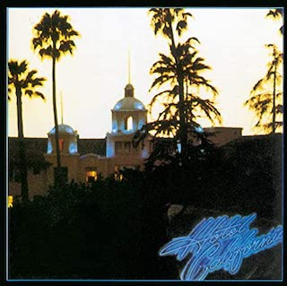
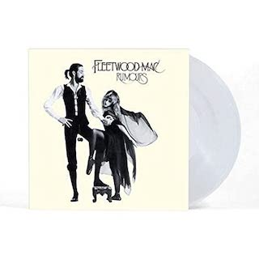
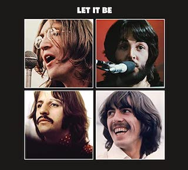
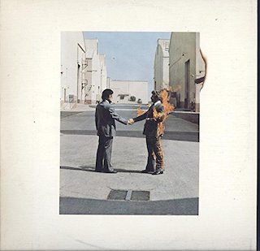
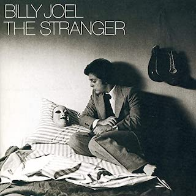
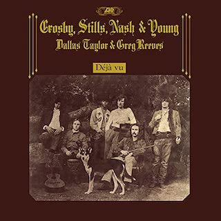
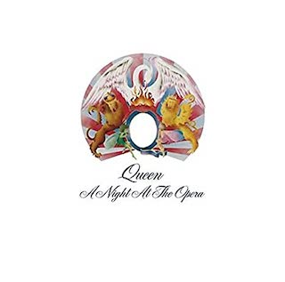

Home
Best Theatre Venues
Best 70s Albums
Cooper's Landing
MU Journalism School
My Top Favorite Seven Albums of the 70s
1. Hotel California, Eagles, 1976

2. Rumours, Fleetwood Mac, 1977

3. Let It Be, Beatles, 1970

4. Wish You Were Here, Pink Floyd, 1975

5. The Stranger, Billy Joel, 1977

6. Déjà Vu, Crosby, Stills, Nash & Young, 1970

7. A Night at the Opera, Queen, 1975
